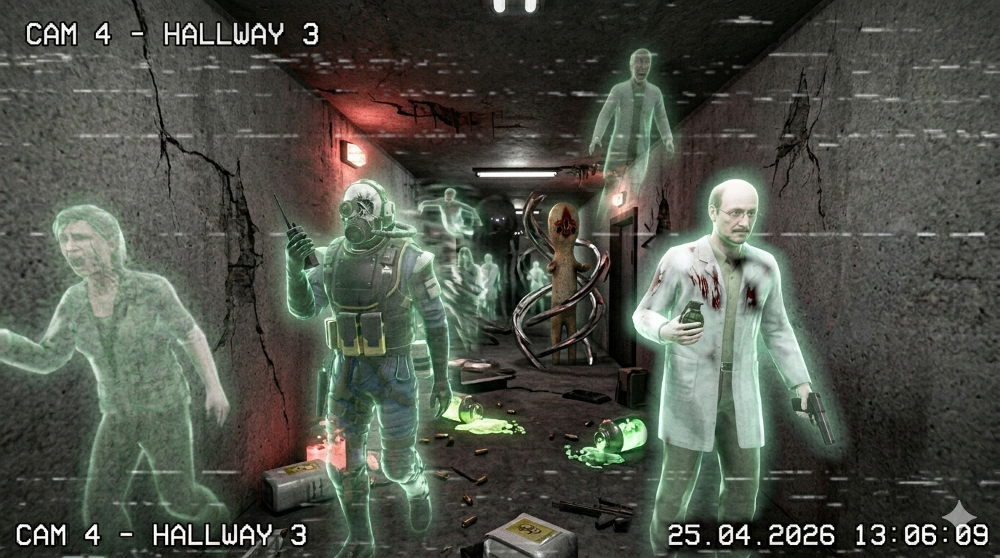

For 684 days, the auxiliary facility beneath Tam's Pizzeria was spoken about in the past tense. Doors stayed sealed, trays stayed cold, and even the rats had apparently transferred out. At 04:32 AM this morning, the site objected to that arrangement and powered itself back on.
Backup lights returned in a neat orange sequence through Entrance Zone. Checkpoint doors cycled open and shut with the kind of confidence only old machinery and senior administrators usually possess. Then the intercom cleared its throat and announced breakfast service as if the shutdown had ended yesterday and everyone was merely running late.
Security initially logged the event as a delayed diagnostics run. That explanation held for nearly a full minute, right up until motion returned to twelve camera feeds at once. Several of the figures crossing those corridors matched residents who had long ago been logged as transferred, missing, or otherwise no longer expected to be asking for extra sauce at 05:00 in the morning.
By mid-morning, security technicians had also recovered a corrupted archive frame dated 25.04.2026, apparently captured during one of the facility's earlier false starts. It showed not just wandering residents, but a full Hallway 3 traffic jam of familiar staff, spectral stragglers, and at least one monster no one remembers signing the visitor log.
Watch commander Eagle, the first officer into the restored security room, reported that the monitors looked ordinary for exactly three seconds.
"The lights came up one bank at a time, then Camera 6 showed three residents walking past Checkpoint A like they had only stepped out for a smoke break," Eagle said. "No badges. No panic. One of them was carrying what looked like a boxed staff pizza. If this is a haunting, it's an organized one."
The canteen ovens, cold since closure, also returned to temperature. Maintenance detected oregano in Heavy Containment before any kitchen crew had signed in, which in Foundation terminology counts as both a culinary development and a security concern.

The recovered CCTV image now circulating among staff is unsettling for the opposite reason: it is far too dramatic to dismiss. Hallway 3 appears to contain half a shift roster and half a breach report at the same time. A scientist recognizable to several older staff members appears armed and bleeding, a hazmat-suited responder is still on the radio, translucent residents drift through the walls, and at least one familiar monster can be seen waiting behind them as calmly as if it also expected breakfast service.
Systems archivist Printer restored the records cluster from the site's basement print room and confirmed that the network was not merely replaying stored footage. Door requests, locker access attempts, and dormitory occupancy pings were being generated live by residents whose files had not changed since the site went dark.
"I thought the cameras were looping old tape until the printers woke up," Printer told this paper while separating a warm stack of automatically generated meal vouchers. "Then the system reissued breakfast coupons to names that have not drawn rations in nearly two years, printed a hazard note for Hallway 3, and flagged three faces I know for a fact attended my retirement party. One of them is technically still retired."
Facility Manager A. R. Korat has authorized a controlled reopening of the site while Dr. ████ Wilson reviews the restored feeds. Staff have been advised not to approach unidentified residents alone, and not to accept cafeteria tokens, keycards, unsolicited pizza slices, or tactical advice from any person appearing translucent on camera.
A second recovered angle from the same timestamp appears to have been taken from directly overhead, showing the corridor after the situation fully collapsed into the sort of geometry only old sites and tired cameras can produce. Printer says the top-down frame is useful because it confirms the main image was not a reflection, a prank, or "another one of Eagle's extremely committed morale exercises."

-
04:32 AM - Backup generators engage automatically beneath the pizzeria annex.
-
04:36 AM - Entrance Zone lights and cameras 01 through 12 restore power without a scheduled maintenance ticket.
-
04:41 AM - Eagle confirms unregistered movement on Camera 6 near Checkpoint A.
-
04:47 AM - The dormant archive printer outputs 23 meal vouchers and two staff rosters dated 22.05.2026.
-
04:53 AM - Printer confirms live occupancy pings from the old resident wing and cafeteria hall.
-
05:08 AM - Facility Manager Korat authorizes limited reopening of Entrance Zone and adjacent support rooms.
-
05:14 AM - Dr. ████ Wilson requests that all returning residents be treated as witnesses pending classification review.
Engineers investigating the Surface radio mast say the public address system has also resumed operation and is now broadcasting a pre-shutdown lunch menu at sunset every evening. Assistant Lt. K. Evtonped says a fuller report will be issued once the mast stops requesting extra mozzarella.